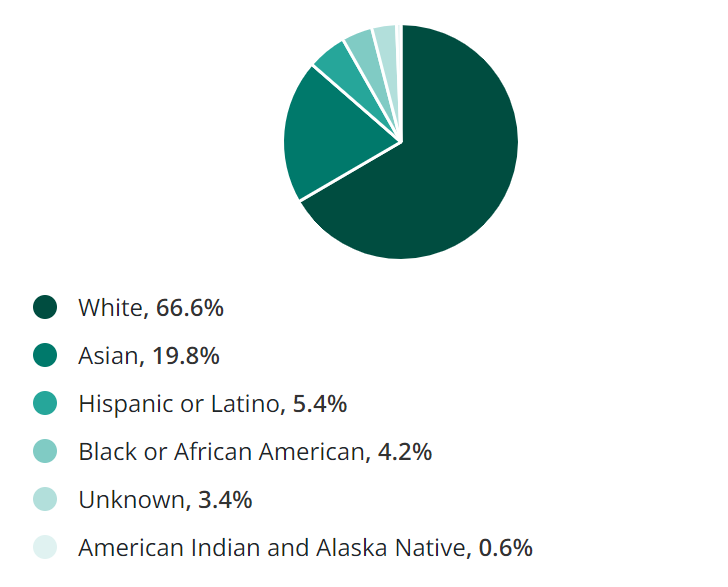
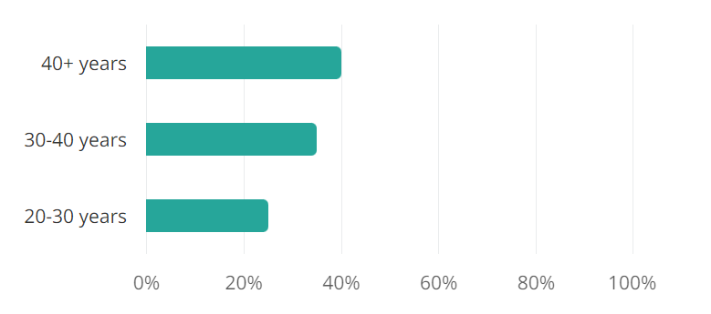

The job of a biostatistician is to collect, analyze, and summarize data about all things related to medicine and public health by applying mathematics, statistics and data science to biology.
Gender pay gap: For every $1 earned by male Americans, women earn 98¢.
Men Income: $73,277
Women Income: $72,163
Wage Gap:

Age:

Race
Male Age
Female Age
White
36
40
Black/African American
43
37
Asian
31
35
Hispanic/Latino
36
35
Summary:The average annual salary for a biostatistician in the United States is $131,578. The salary ranges from 85k - 204k per year. Biostatistician is an industry that is predominantly made up of 40 years old, white males. Over the past 5 years, salaries have increased by 15%. From 2018-2028, it had been projected to grow by 30%. There are over 1,995 biostatisticians in the United States.
Trends on a national level:
Employment: 26,300. From 2016-2018, employment increased slightly but the employment trend has been neutral since 2006.
Median age of workers: 42
Average retirement age: 65. Since workers in this industry tend to retire later in their careers relative to the average, it is expected that the retirement rate will be lower.
Median wage: $46.70/hour
Trends in Ontario:
Employment: 6,350. Job prospects over the next 3 years have been rated “Good” in Ontario compared to other provinces. The expansion of the data sector is in favor of increasing opportunities for biostatisticians.
Gender distribution: 53% men to 47% women
Self-employed: Less than 5% of of mathematicians, statisticians and actuaries are self employed in comparison to the 12% average in all other sectors
Experiential learning opportunities
Technical skills: It's important to learn and get certified in common programming languages like R, Python, C, C++, JS, MATLAB, and SQL.
Online certification: There are many online biostatistics courses offered. Coursera and
Udemy offer a few programs and certification courses.
Practical experience: Post-secondary students can also gain experience by working with a large database, managing spatially and temporally coded data or other data-related tasks.
Volunteer opportunities: Students can obtain experiential learning by working with non-profit organizations, public health clinics, or other organizations to collect data that would be beneficial to them. Ex: Global Brigade
Job experiences in public health services: You can also get internships or jobs as nurses, public health educators, epidemiology, or doctors before applying to become a biostatistician. It’s possible to gain experience by working as a researcher or clinical lab technician as well, or apply for a junior position as a biostatistician.
Post-Secondary Programs
A graduate degree in mathematics, statistics or other related fields is required to be a biostatistician. Students take up a master’s program in science or public health and later go into a PhD program.
Admission requirements: Grade 12U Biology, Grade 12U Calculus and Vectors, Grade 12U Chemistry, Grade 12U English, and 2 other U/M courses
Admission averages: low 90s
Tuition: $6,050
Master’s of Science (MSc) degree in Epidemiology and Biostatistics:
Admission requirements: 4-year honors degree (or equivalent): relevant undergraduate coursework in math and science, especially statistics and biology
Min average of A- (80% or 10/12)
Strong performance in a recent statistics course
Tuition:
Total Full Time Domestic Fees: $3,125.93
Tuition: $2,120.00 per term
Reason: Western is one of the largest research-concentrated universities in Canada. Students will get to work closely with epidemiologists, biostatisticians and physicians who are dedicated to help students with policy-related research. They will dive into many policy-relevant procedures related to epidemiology, biostatistics, health services research, health economics, clinical trials, and program evaluation.
Undergraduate: Appy to Mathematics and choose Biostatistics as the major.
Requirements: Advanced Functions, Calculus and Vectors, English 4U, one other 4U and 2 other grade 12 U or M courses
Admission averages: high 80s
Tuition: $3,879.62 per term
Master’s of Science (MSc) degree in Biostatistics:
4-year Honors Bachelor degree with a significant statistics and/or actuarial science component
Overall 78% average from a Canadian university (or its equivalent)
Interview might be required.
Tuition:
Full-time tuition per term: $2,254.00
Full-time incidental free per term: $551.69
Part-time tuition per term: $1,127.00
Part-time incidental fees per term: $302.41
Reason: Waterloo has self-claimed its biostatistics program to be “the only one of its kind in Canada”. Its main features in this program are two years of work experience and a research project with a professor, which would be useful for a student's resume. Students will graduate with the required knowledge to apply on topics like diagnostics, medical technology, and treatments and design clinical experiments, analyze health data, and interpret results.
Undergraduate: Honours Bachelor of Science (Program: Statistics)
Requirements: Ontario Secondary School Diploma, Six 4U/M courses, including: Calculus & Vectors and English
Admission average: high 80s
Tuition: $9,332.54
Master’s of Science (MSc) degree in Biostatistics:
Appropriate Bachelor’s degree from a recognized university
Final year of the degree: mid-B average
Prerequisite courses: linear algebra, advanced calculus, probability and mathematical statistics
Tuition costs at UTM: $6,210
Reason: UofT has over 700 academic programs and has continually been ranked as one of Canada’s #1 universities and globally ranked 25. Their program provides a foundation in mathematical statistics, survival analysis, categorical data analysis and applied Bayesian methods. A practicum placement is also offered, which develops knowledge on clinical trials, predictive modelling, applied machine learning and correlated data analysis.
Requirements: ENG4U (or French equivalent), 4U biology, 4U chemistry, any 4U math, plus 2 additional 4U or 4M courses.
Admission average: 75-80%
Tuition: $7,423
M.Sc. in Epidemiology with Specialization in Biostatistics or M.Sc. in Mathematics and Statistics with Specialization in Biostatistics:
4-year undergraduate degree: Honors BSc degree in disciplines such as statistics, mathematics, biology, life sciences, health science or economics
Min average of 75%
Successfully completed courses in mathematics, statistics or data analysis
Prerequisite: at least 2 undergraduate courses in calculus or linear algebra and 2 courses in applied statistics or probability
Tuition:
Term Fee: $1,924.33
Tuition: $5,772.99
Student Assistance Levy: $100
Ancillary Fees: $1,312.78
Total: $7,185.77
Reason: One highlight of Queen’s graduates is that 90.1% were employed 6 months after graduation, which exceeds the provincial average of 86.5%. Their biostatistics program equips students with the knowledge and skills on experimental study designs, statistical theory, statistical models for health data analysis, and statistical computing. A 4-month practicum is also offered for students to gain an opportunity to apply and develop skills to work as statistical data analysts.
Tuition Comparision - cost per term for MSc degree in Biostatistics:
Tuition slider:
University:
Employment requirements:
It is required for a mathematician or statistician to have a graduate degree in mathematics or statistics.
Actuaries need to have post-secondary education in actuarial science, mathematics, statistics, economics, commerce or business administration.
47% of biostatisticians have a Bachelor's degree, 41% Masters, 11% Doctorate, and 1% have an Associate's.
Most biostatisticians major in statistics or biostatistics. A few also have a major in mathematics, biology or other science/health related fields.